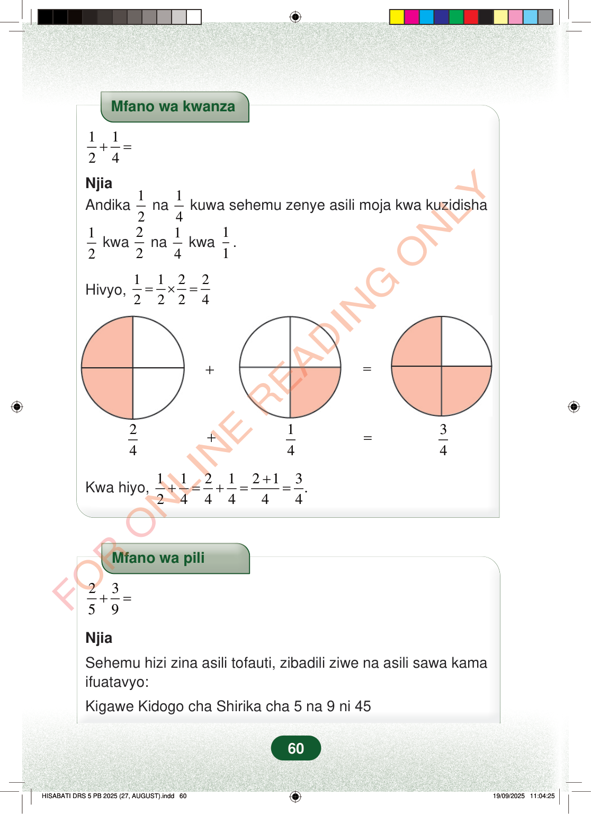

Mfano wa kwanza1124+=NjiaAndika12na14kuwa sehemu zenye asili moja kwa kuzidisha12kwa22na14kwa11.Hivyo,11222224=×==+24+14=34Kwa hiyo,1121213.244444++=+==Mfano wa pili2359+=NjiaSehemu hizi zina asili tofauti, zibadili ziwe na asili sawa kamaifuatavyo:Kigawe Kidogo cha Shirika cha 5 na 9 ni 4560
Mfano wa kwanza
1 1 2 4 + =
Njia Andika 1
2 na 1 4 kuwa sehemu zenye asili moja kwa kuzidisha
1 2 kwa 2 2 na 1 4 kwa 1 1 .
Hivyo, 1 1 2 2 2 2 2 4 = × =
2 4 +
1 4 =
3 4
Kwa hiyo, 1 1 2 1 2 1 3. 2 4 4 4 4 4 + + = + = =
Mfano wa pili
2 3 5 9 + =
Njia
Sehemu hizi zina asili tofauti, zibadili ziwe na asili sawa kama ifuatavyo:
Kigawe Kidogo cha Shirika cha 5 na 9 ni 45
60
Mfano wa kwanza12+14=NjiaAndika 12 na 14 kuwa sehemu zenye asili moja kwa kuzidisha 12 kwa 22 na 14 kwa 11.Hivyo,12=12×22=24Duara limegawanywa katika robo nne, na robo mbili za upande wa kushoto zimetiwa rangi. Hii ni 2/4 au 1/2.24Duara limegawanywa katika robo nne, na robo moja ya chini kulia imetiwa rangi. Hii ni 1/4.14Duara limegawanywa katika robo nne, na robo tatu zimetiwa rangi. Hii ni 3/4.34Kwa hiyo,12+14=24+14=2+14=34.25+39=